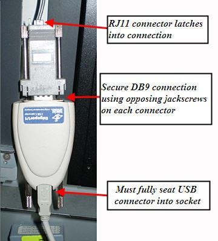

Illustration 4: 1-Wire Serial Master Connection to USB Serial DB9 Adapter

| NOTE: | Typically, these connectors are attached to the inside of the GOC's right cover. For an image of proper location, see the Installation Manual, Section 8-11-3. |